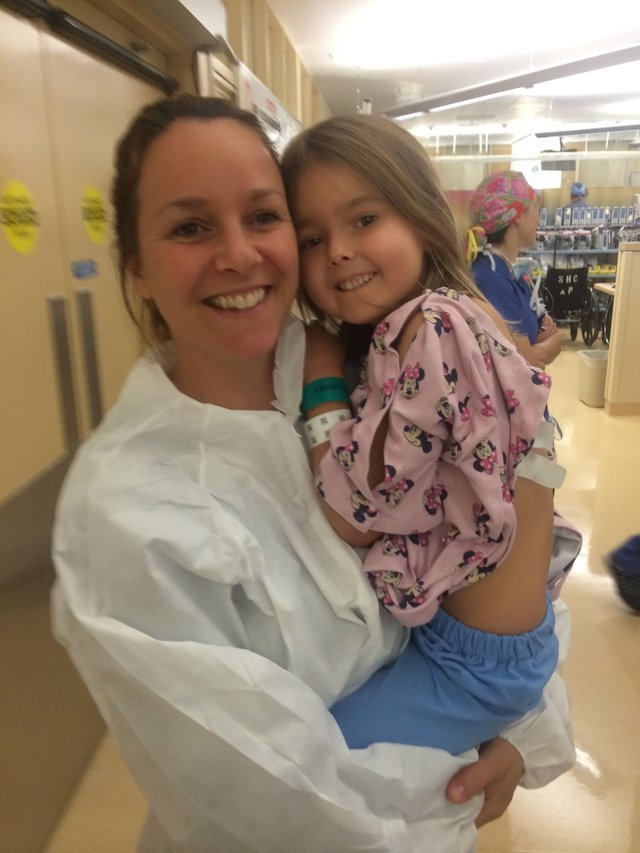

Learning through play
Gamified, interactive modules turn dense clinical jargon into learning experiences that patients will finish and remember.
Interactive, gamified health literacy & patient education
HealthLit turns complex medical information into interactive, age-appropriate experiences — so patients, caregivers, and clinicians can communicate their health care.
The problem
Nearly nine in ten U.S. adults have difficulty using the everyday health information they're given — and the burden falls hardest on those already most at risk. Yet patient education still leans on dense pamphlets, rushed appointments, and instructions written for clinicians rather than the people trying to follow them. When understanding breaks down, so does care: missed medications, skipped follow-ups, and outcomes that were never inevitable.
lack proficient health literacy — leaving most people navigating their care without a clear map.
National Assessment of Adult Literacy (Kutner et al., 2006)
is forgotten or misunderstood almost immediately after a clinical visit.
Kessels, 2003
in readmissions, missed adherence, and decisions made on incomplete information.
Center for Health Care Strategies, 2023
Our approach
Gamified, interactive modules turn dense clinical jargon into learning experiences that patients will finish and remember.
Grounded in established health literacy research, so every module rests on methods that have been studied and shown to work.
Distinct experiences for patients, caregivers, and clinicians — each meeting them where they are and guiding them toward clear objectives.
No protected health information. Lessons and modules are safe to use anywhere, from clinic to living room.
Live demos
The same appointment, experienced from every angle. Open a working prototype below.
Founding team
“We wish this existed when we — or our children — were being diagnosed.”
Founder & CEO
Educator, published researcher, NIH award winner, and pediatric rare-disease advocate, with a decade of lived experience as a parent in the rare-disease system.
Co-founder & COO
Strategic health-tech product leader with 13+ years across healthcare AI strategy, complex operational workflows, and HIPAA/CMS compliance.

Co-founder & CCO
RN at Stanford and founder of a national foundation for children with scleroderma, with lived experience as caregiver of a child with complex medical needs.